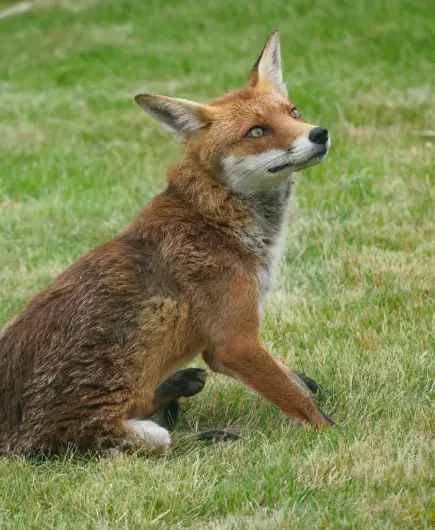
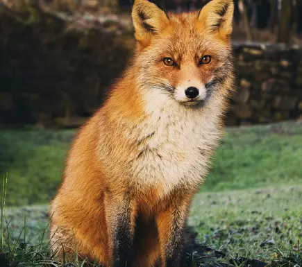

Raposa Vermelha
da espécie Vulpes VulpesA raposa-vermelha é a maior das raposas verdadeiras e um dos membros de maior distribuição entre a ordem Carnivora. É encontrada em todo o hemisfério Norte, incluindo a maior parte da América do Norte, Europa e Ásia, mais algumas partes do Norte da África.
Esta raposa é um mamífero onívoro e oportunista, de médio porte, com os pelos geralmente castanho-avermelhados. Tem, em geral, hábitos noturnos e crepusculares (exceto em lugares de pouca movimentação, onde pode ser vista durante o dia).
A raposa-vermelha possui um corpo alongado, com membros relativamente curtos para sua altura. Sua cauda, que é mais longa do que metade do comprimento de seu corpo, é longa, peluda e toca o solo quando a raposa está em pé.
A raposa-vermelha adulta muitas vezes aparenta ser solitária (exceto durante a época de reprodução), mas às vezes pode viver em pares ou formar grupos sociais.
"Mas eu não estava seguro. Lembrava-me da raposa. A gente corre risco de chorar um pouco quando se deixa cativar..."
- Ancestral: Vulpes alopecoides
- Peso Médio: 14kg
- Expectativa de Vida: 12 anos
- Tipo: Mamífero
- Família: Canidae
- Espécie: Vulpes Vulpes
A reprodução ocorre uma vez ao ano. Apesar de o cio durar aproximadamente 3 semanas, a fêmea só é receptiva as investidas do macho por 3 dias. Nem todas as fêmeas do grupo reproduzem. A gestação dura entre 49 a 55 dias. O parto ocorre em cavernas ou na própria toca, sendo que às vezes a mesma toca é utilizada por diversas gerações.
Estima-se que existam aproximadamente 48 subespécies de raposas vermelhas, porém essa informação não foi comprovada cientificamente. Esse animal é caçado em algumas regiões, por esporte, pois sua carne não costuma ser aproveitada para o consumo.
.svg) Desenvolvido por Antonio Netto
Desenvolvido por Antonio Netto